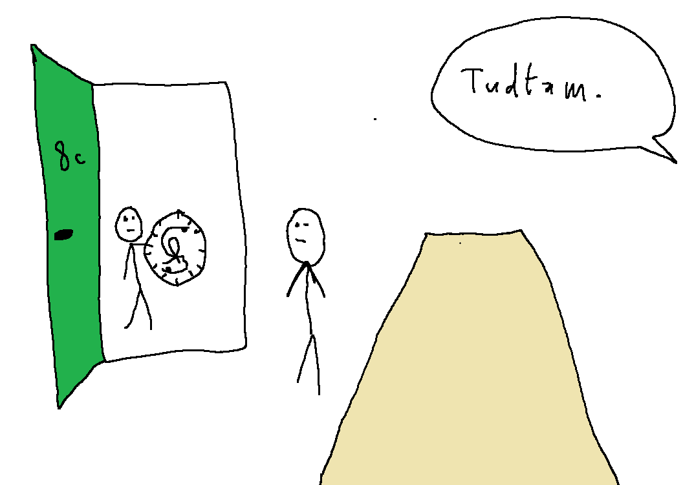

Az óra pozitív irányba forgott, így Inverz Ackermann betrappolt a szülői értekezletre.
A teremben, amiben Arany Dániel matematikaverseny volt, az óra pozitív irányba forgott. Sajna ez néhány embernek nem tetszett, aki szerint az időnek negatív irányba kéne mennie, így a 38-as teremből el kellett hozni az órát.
A verseny után úgy gondolta Inverz Ackermann, hogy visszaviszi az órát. Később ezt nyilatkozta: „4 órát ültem a versenyen és azt gondoltam már nincs felnőtt az épületben, ezért dobbantgattam oly boldogan.”. A terembe érve tudta csak meg, hogy ott szülői értekezlet van.
Anyja, Iterált Logaritmus csak azért tudott a szülői értekezletről, mert amint kedden osztályfőnök mondta mikor lesz, Inverz Ackermann küldött e-mailt Iterált Logaritmusnak, amely után 5 másodperccel már elfelejtkezett róla. Iterált Logaritmus csak annyit mondott: „Tudtam.”. Az osztályfőnök még megjegyezte, hogy már csak a gurulós táska hangja hiányzott.
Mint megtudhattuk, míg Tangens treppel, Inverz Ackermann trappol.